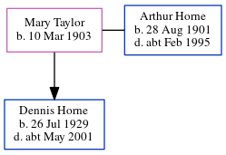

Dennis Arthur Horne 1929 - c2001
[ Home ] | [ Calendar ] | [ Surnames Index ] | [ Errors ] | [ Family History ]The child of Arthur Horne (a general carpenter labourer) and Mary Taylor, Dennis Horne, the second cousin once-removed on the father's side of Nigel Horne, was born in Canterbury, Kent, England on 26 Jul 19291,2,3. On 29 Sept 1939, he was living at 76 Querns Road in Canterbury1.
He died c. May 2001 in Thanet With Dover, Kent, England3.
Parents
- Arthur was born on 28 Aug 1901
- Mary J was born on 10 Mar 1903
Citations
- 1939 Register - Findmypast (was the son of the head of the household)
- England & Wales births 1837-2006 - Findmypast
- England & Wales deaths 1837-2007 - Findmypast
Media
England & Wales births 1837-2006 - BMD/B/1929/3/AZ/000578/017
1939 Register - TNA/R39/1677/1677D/013/29
England & Wales deaths 1837-2007 - BMD/D/2001/6/84308409
Family Tree
Map
Generated by ged2site. Last updated on Jul 3, 2024